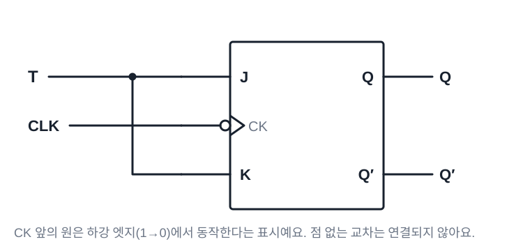

래치와 플립플롭은 출력을 다시 입력으로 되먹여 1비트를 기억하는 소자예요. 지금까지 만든 조합회로는 지금 들어온 입력만 반영해서 손을 떼면 바로 원래대로 돌아가요. “조금 전에 버튼이 눌렸다”는 상태를 담아 두려면 출력을 다시 입력으로 돌려보내는 되먹임(feedback)이 필요해요.
이해를 위한 예시로, 버튼을 눌렀다 떼면 켜진 채로 남고 다른 버튼을 눌러야 꺼지는 장치를 생각해 봐요. 제어 입력(Enable이나 Clock)에 따라 값을 유지하거나 새 값을 저장해요. 전원이 꺼지면 값이 사라지는 휘발성 소자이고, 레지스터나 캐시 같은 기억장치의 기본 단위예요.
S·R에서 손을 떼도 앞서 정한 Q가 남아요
Enable E=1인 SR 래치를 예로 따라가 봐요.
순서
제어
입력
출력
설명
순서
E
S
R
Q
왜 이 값인가요
시작
1
0
0
?
전원 직후라 Q는 정해져 있지 않아요
Set
1
1
0
1
S=1이라 Q=1로 세팅돼요
유지
1
0
0
1
손을 떼도 앞서 세팅한 1이 남아요
Reset
1
0
1
0
R=1이라 Q=0으로 리셋돼요
유지
1
0
0
0
손을 떼도 앞서 리셋한 0이 남아요
색칠한 두 행은 E=1, S=R=0으로 입력이 같은데 직전 입력에 따라 Q가 달라요. 회로가 지난 명령을 기억하고 있다는 뜻이에요.
S·R은 잠깐만 1이 돼도, Q는 다음 명령이 올 때까지 그 값을 지켜요.
이번 실험에서 확인하는 세 가지 회로
실험
사용 IC
소자
확인할 것
실험 1
74HC00
SR 래치
E=1에서 Set·Reset과 유지, E=0에서 입력 차단
실험 2-1
74HC04, 74HC00
D 래치
E=1이면 Q=D, E=0이면 마지막 값 유지
실험 3-2
74HC76
JK 플립플롭
클록 하강 엣지(1→0)에서만 갱신, J=K=1 단일 Toggle
외울 규칙
래치·플립플롭 → 되먹임으로 1비트를 기억하고 제어 신호에 따라 저장·유지하는 휘발성 소자
전원 직후 → Q는 미정이므로 먼저 Set/Reset해요
$E=1$ SR → 10은 Set·01은 Reset·00은 이전값 유지
수행 → 1 SR·2-1 D 래치·3-2 하강 엣지 74HC76 (2-2·3-1은 보충)
헷갈리지 마요
2-2·3-1이 보충이라는 것은 시험 제외를 뜻하지 않아요.
여기 값은 이상적인 예상이고 실제 측정 수치는 없어요.
출력을 되먹이는 회로와 NAND를 다시 읽어요
순서회로는 되먹임 때문에 이전 상태 Q에 따라 결과가 달라져요
순서회로는 출력의 일부를 입력으로 되먹여 이전 상태 Q(t−1)를 결과에 반영해요. 같은 입력을 주어도 직전 값이 무엇이었는지에 따라 Q(t)가 달라져요.
조합회로는 입력에서 출력으로 한 방향만 흐르지만, 순서회로는 되먹임이 있어요. Q(t−1)은 입력을 바꾸기 직전의 Q, Q(t)는 바꾼 뒤의 Q예요. 표의 “Q(t−1)”은 “바뀌지 않고 그대로 유지”라는 뜻이고, 정상 상태에서는 Q′이 Q의 보수(Q̄)예요.
NAND는 0이 하나라도 있으면 출력이 무조건 1이에요
이번 실험 회로는 대부분 NAND(74HC00, 74HC10)로 되어 있어요. 0이 하나라도 있으면 출력이 무조건 1이고, 입력이 모두 1일 때만 0이에요.
입력
출력
설명
A
B
(A·B)′
왜 이 값인가요
0
0
1
0이 있어 1이에요
0
1
1
0이 있어 1이에요
1
0
1
0이 있어 1이에요
1
1
0
모두 1일 때만 0이에요
한 입력을 1로 고정하면 나머지 입력을 뒤집는 NOT처럼 동작하고, 0으로 고정하면 다른 입력과 상관없이 1을 내요. 래치를 읽을 때 이 두 성질을 계속 써요.
보충: 이 회로는 레벨로 동작하는 래치예요. E=1, J=K=1이 계속되면 Q가 뒤집힌 뒤 그 새 값이 다시 되먹여져 또 뒤집혀요. E가 1인 동안 Q가 0과 1을 계속 오가고, E를 내리는 순간의 값이 남아요. 이것을 race-around라고 해요. 표의 “Toggle 한 번”은 E를 Q가 한 번 뒤집힐 만큼은 길게, 뒤집힌 값이 되먹임으로 다시 돌아오기 전에 끝날 만큼 짧게 1로 했을 때의 이상적인 결과예요. 이 시간 창은 아주 좁아요.
그래서 정확히 한 번만 뒤집으려면 엣지에서만 동작하는 JK 플립플롭(74HC76)을 써요. 이 문제는 게이트 지연을 가정한 일반 원리이고, 교안이 측정값을 제시한 것은 아니에요.
한 단계만 풀어 봐요
Q=1인 상태에서 E=1, J=1, K=0을 넣으면 Q는 몇일까요?
힌트
J 쪽 NAND에는 Q′이 들어가요. 지금 Q′은 0이에요.
연습 답
Q=1 그대로예요. J 쪽 NAND는 Q′=0 때문에 1을 내고, K 쪽 NAND는 K=0 때문에 1을 내서 둘 다 명령이 없어요. Set 결과와 같아요.
외울 규칙
J · K → S 자리 · R 자리 (SR 래치와 같고 둘 다 1만 Toggle)
$E=0$ → 유지
$E=1$, $\mathrm{JK}=00$ · 01 · 10 · 11 → 유지 · Reset · Set · Toggle
한 갱신 → $Q_{\mathrm{next}}=JQ'+K'Q$
이유
JK 래치는 J 쪽에 Q′·K 쪽에 Q를 되먹여 각각 $J\cdot E\cdot Q'$와 $K\cdot E\cdot Q$를 만들어요. 그래서 $J=K=1$에서 $A=(J\cdot E\cdot Q')'$, $B=(K\cdot E\cdot Q)'$는 직전 Q의 반대쪽만 0이 돼요.
헷갈리지 마요
레벨 회로의 11은 긴 $E=1$에서 race-around해 반복 반전해요.
단일 Toggle은 한 번 바뀌고 되먹임이 돌아오기 전 끝나는 짧은 펄스의 이상 조건이에요. 지연을 가정한 일반 원리 보충으로 교안 측정값이 아니에요.
정확히 한 번에는 엣지형 74HC76을 써요.
래치와 플립플롭: 레벨과 엣지
래치는 문이 열려 있는 동안, 플립플롭은 엣지 순간에만 받아요
래치는 E=1인 레벨 구간 동안 계속 입력을 반영하고, 플립플롭은 클록이 바뀌는 엣지 순간에만 한 번 저장해요. 열린 문과 카메라 셔터의 차이예요.
교안은 래치를 “비동기 기억소자 (Level-triggered)”, 플립플롭을 “동기 기억소자 (Edge-triggered)”라고 정리해요. 래치는 E=1이면 문이 열려 D가 바뀔 때마다 Q도 따라 바뀌고, 플립플롭은 클록이 바뀌는 순간에만 찰칵 하고 D를 찍어 다음 엣지까지 유지해요.
같은 입력이라도 래치는 C=1 구간의 D 변화를 모두 내보내고, 플립플롭은 오르는 엣지의 D만 저장해요.
같은 입력 파형에서도 레벨 래치와 엣지 플립플롭의 Q가 갈려요
타이밍도 그림과 같은 입력을 시점별 표로 옮겨 봐요. D 래치도 상승 엣지 D 플립플롭도 받아들일 때는 Q=D이지만, 언제 받아들이는지가 달라요.
순서
제어
입력
출력
설명
시점
C
D
D 래치 Q
D F/F (↑) Q
왜 이 값인가요
①
0
0
?
?
전원 직후라 초기값 미정
②
0→1 (↑)
0
0
0
래치는 C=1이라 따라가고, 플립플롭은 상승 엣지의 0을 저장
③
1
1
1
0
래치는 D=1을 따라가지만 플립플롭은 엣지가 아니라 이전 0 유지
④
1
0
0
0
래치는 D=0을 따라가고 플립플롭은 이전 0 유지
⑤
1→0
0
0
0
래치는 문이 닫히며 0 저장, 플립플롭도 이전 0 유지
⑥
0
1
0
0
둘 다 문이 닫혀 있어 D=1 변화 무시
⑦
0→1 (↑)
1
1
1
래치는 C=1이라 따라가고, 플립플롭은 상승 엣지의 1을 저장
⑧
1
0
0
1
래치는 D=0을 따라가지만 플립플롭은 엣지가 아니라 이전 1 유지
⑨
1→0
0
0
1
래치는 문이 닫히며 0 저장, 플립플롭도 이전 1 유지
색칠한 ③과 ⑧을 보면 래치는 C가 1로 머무는 동안 D를 실시간으로 따라다니지만, 플립플롭은 ②와 ⑦에서 찍은 값을 끝까지 붙잡고 있어요.
구분
래치(Latch)
플립플롭(Flip-Flop)
제어 입력
Enable (E 또는 C)
Clock (CLK)
반영 시점
E=1인 동안 계속
클록 엣지 순간에만
트리거
레벨 (Level-triggered)
엣지 (Edge-triggered)
교안 분류
비동기 기억소자
동기 기억소자
이번 실험
SR·D 래치 (실험 1, 2-1)
74HC76 JK F/F (실험 3-2)
엣지는 0에서 1로 오르는 Rising Edge(상승 엣지)와 1에서 0으로 떨어지는 Falling Edge(하강 엣지)가 있어요. 클록 단자의 삼각형(▷)은 엣지 트리거 표시이고, 앞에 원(bubble)이 붙으면 하강 엣지예요. 74HC74는 상승 엣지, 74HC76은 하강 엣지예요.
클록 단자 모양
트리거 방식
동작 시점
E 또는 C (삼각형 없음)
래치: 레벨 트리거
1인 동안 계속 받음
▷
플립플롭: 상승 엣지
0→1로 오르는 순간
○▷ (원 + 삼각형)
플립플롭: 하강 엣지
1→0으로 떨어지는 순간
보충: 기출에 나오는 74HC574도 74HC74처럼 상승 엣지 D 플립플롭이에요. 플립플롭 8개가 한 칩에 들어 있고, 출력 enable 핀(OE′)이 Low일 때 저장된 값이 출력 핀에 나와요. 이 칩은 교안 준비물이 아니에요.
보충: 엣지 사이(클록이 0이나 1로 머무는 동안)에는 입력을 바꿔도 Q가 바뀌지 않아요. 74HC74 표의 “CLK=0, D=X → Q(t−1)” 행이 바로 이 뜻이에요.
엣지 한 순간에만 받으므로 되먹임 race-around가 사라져요
JK 래치에서 J=K=1, E=1이 길면 뒤집힌 Q가 앞단으로 돌아와 또 뒤집혔어요(race-around). 문이 열려 있는 동안 계속 받아들이니 멈출 수가 없었어요.
플립플롭은 엣지 한 순간에만 받아요. 뒤집힌 Q가 앞으로 돌아왔을 때는 그 순간이 이미 지나서 다시 들어가지 않아요. 그래서 클록 한 번에 딱 한 번만 뒤집혀요. 74HC76이 J=K=1에서 엣지마다 정확히 한 번 Toggle하는 이유예요.
“비동기”라는 말을 조심하고, 짧은 펄스에는 AND가 필요해요
교안과 기출 답안은 래치를 “Clock과 무관한 비동기식”이라고 써요. 그렇지만 Enable 래치도 E에 따라 입력을 받아요. 핵심 차이는 “E가 1인 동안 계속(레벨)” 대 “클록 엣지 순간에만(엣지)”이에요. 답안에는 이 차이를 함께 쓰는 게 안전해요.
플립플롭에는 E가 따로 없어요. 래치의 E 자리를 클록(CLK)이 맡고, 읽는 방식만 “1인 동안”에서 “바뀌는 순간”으로 달라져요. 칩에 붙은 다른 제어 핀은 E가 아니에요. 74HC74·74HC76의 Set·Reset(PR·CLR)은 클록을 무시하고 Q를 강제로 정하는 핀이라 평소에는 HIGH로 둬요. 74HC574의 OE′는 저장된 값을 출력 핀에 내보낼지만 정하고, 무엇을 저장할지는 바꾸지 않아요.
교안 p5의 SR F/F 회로는 CLK와 반전된 CLK를 한 게이트에 넣고, 그 출력을 앞단 NAND 두 개의 E 자리로 보내요. 래치를 플립플롭으로 만들려면 E가 “엣지 순간에만 잠깐 1”이 되면 돼요. 이런 짧은 신호를 펄스라고 해요. 왼쪽의 CLK·NOT·게이트 조합은 이 펄스를 만들려는 장치예요.
보충: 펄스가 생기는 원리는 NOT의 지연이에요. CLK가 0→1로 오르는 순간 CLK는 이미 1인데, NOT 출력 CLK′는 아직 바뀌지 못해 잠깐 1로 남아요. 평소에는 늘 반대인 둘이 그 짧은 순간에만 함께 1이에요. 그런데 그림의 게이트는 NAND예요.
설명
출력
때
CLK·CLK′
AND 출력 (원하는 펄스)
NAND 출력 (교안 회로)
평소
0
0 (앞단 닫힘)
1 (앞단 늘 열림)
상승 순간
1
1 (잠깐 열림)
0 (잠깐 닫힘)
AND였다면 평소에는 닫혀 있다가 상승 순간에만 잠깐 열려서 원하는 플립플롭이 돼요. 그림 그대로 NAND면 정반대로, 평소에 늘 열린 E=1 래치가 되고 엣지에서는 오히려 잠깐 닫혀요. 짧은 1 펄스를 얻으려면 그 자리에 AND(또는 NAND 뒤 NOT)가 있어야 해요. 그림을 추적하라는 문제는 그림 그대로 NAND로 따라가고, 왜 이상한지를 물으면 이 표로 설명해요. 이 회로는 이번 실험 항목이 아니에요.
74HC74 D 플립플롭(실험 2-2, 이번에는 보충)
74HC74는 상승 엣지 D 플립플롭 두 개가 든 IC예요. 교안 표에 따르면 Set=0이면 Q=1, Reset=0이면 Q=0이고 이것은 클록과 상관없이 바로 적용돼요(Active Low). 그래서 D에 따른 결과를 볼 때는 Set·Reset을 모두 1(HIGH)로 둬요. 둘 다 1이면 클록이 오르는 순간의 D가 Q가 돼요.
보충 74HC74 → Low 활성 Set/Reset이 클록보다 우선, 둘 다 High일 때 ↑의 D를 저장
이유
같은 입력이라도 $C=1$ 구간의 D 변화를 래치는 따라가고, 플립플롭은 엣지에서 찍은 값을 다음 엣지까지 지켜요. 엣지 한 순간만 받으니 $J=K=1$도 엣지당 한 번만 뒤집혀 race-around가 없어요.
헷갈리지 마요
플립플롭에는 E가 없고 CLK가 그 자리예요. Set·Reset(PR·CLR, 강제)과 OE′(출력 여부)는 E가 아니에요.
“비동기 래치”도 Enable 영향을 받아요.
교안 p5는 NOT 지연으로 상승 순간에만 $\mathrm{CLK}=\mathrm{CLK}'=1$이 되는 펄스를 노리지만, $\mathrm{NAND}(\mathrm{CLK},\mathrm{CLK}')$는 평소 1·상승 순간 0이라 AND와 정반대예요. 짧은 1 펄스에는 AND 또는 NAND 뒤 NOT이 필요하다는 보충을 구분해요.
실험 3-2: 74HC76 JK 플립플롭
클록이 1에서 0으로 떨어지는 순간에만 J·K를 읽어요
74HC76은 하강 엣지(1→0)에서만 J·K 입력을 읽어 Q를 갱신하고, J=K=1이면 엣지마다 딱 한 번 뒤집혀요. 엣지 사이에는 입력을 아무리 바꿔도 Q가 유지돼요.
74HC76에는 JK 플립플롭이 두 개 들어 있어요. 클록이 1에서 0으로 떨어지는 순간(Falling Edge)에만 J·K를 보고 Q를 정해요. 그래서 JK 래치처럼 계속 뒤집히는 문제가 없어요. J=K=1이면 엣지마다 정확히 한 번 뒤집혀요.
VCC가 5번, GND가 13번이에요. 교안도 “GND와 Vcc 위치 유의”라고 강조해요.
PR·CLR은 클록을 무시하고 Q를 즉시 정하는 비동기 입력이에요
74HC76에는 지금까지 본 래치에 없던 핀이 두 개 더 있어요. 입력은 두 종류로 나뉘어요.
종류
핀
활성 레벨
하는 일
비동기 강제
PR (Preset)
0 (Active Low)
클록 무시하고 즉시 Q=1 강제 (Set)
비동기 강제
CLR (Clear)
0 (Active Low)
클록 무시하고 즉시 Q=0 강제 (Reset)
동기 조작
J, K, CLK
하강 엣지 (↓)
PR=CLR=1일 때만 하강 엣지에서 Q 갱신
PR(Preset, 미리 1로 세팅)을 누르면 Q=1, CLR(Clear, 지움)을 누르면 Q=0이 돼요. 클록을 기다리지 않고 누르는 즉시 바뀌어요. 이 버튼은 0을 넣어야 눌린 거예요(Active Low). 기본 교차 NAND 래치에서 손잡이를 0으로 내려야 동작했던 것과 같아요. 1을 넣으면 안 누른 상태라서 평소대로 J·K·CLK가 Q를 정해요.
이런 버튼이 있는 이유는 시작값 때문이에요. 전원을 켠 직후의 Q는 정해져 있지 않아서 “첫 입력은 Set이나 Reset으로” 넣었어요. PR·CLR은 그 일을 클록 없이 바로 해 주는 버튼이에요. 이번 실험은 J·K 동작만 보면 되니까 강제 버튼은 안 누른 상태, 즉 PR=1·CLR=1로 고정해요.
PR=CLR=1에서 클록 하강 엣지가 올 때마다 동작해요
PR(Preset, 교안의 SET)과 CLR(Clear, 교안의 RESET)은 클록과 상관없이 바로 적용되는 비동기 입력이고 0일 때 동작해요(Active Low). 둘 다 1(HIGH)일 때만 클록 엣지와 J·K가 Q를 정해요.
제어
입력
출력
설명
SET(PR)
RESET(CLR)
CLK
J
K
Q(t)
왜 이 값인가요
0
1
X
X
X
1
PR=0이라 클록 무시하고 Q=1 강제 (Set)
1
0
X
X
X
0
CLR=0이라 클록 무시하고 Q=0 강제 (Reset)
1
1
0
X
X
Q(t−1)
엣지가 아니라 이전 Q 유지
1
1
↓
0
0
Q(t−1)
하강 엣지에서 JK=00 유지
1
1
↓
0
1
0
하강 엣지에서 JK=01 Reset
1
1
↓
1
0
1
하강 엣지에서 JK=10 Set
1
1
↓
1
1
Q(t−1)′
하강 엣지에서 JK=11 Toggle
한 줄 따라가 볼게요. PR=CLR=1, 처음 Q=0, J=K=1(Toggle)로 두고 클록만 움직여요.
순서
제어
입력
출력
설명
순서
클록 동작
J
K
Q
왜 이 값인가요
①
1→0 (떨어짐)
1
1
1
하강 엣지라서 Toggle
②
0→1 (올라감)
1
1
1
상승 엣지는 무시
③
1→0 (떨어짐)
1
1
0
하강 엣지라서 Toggle
색칠한 ①과 ③처럼 클록이 1에서 0으로 떨어질 때마다 딱 한 번 뒤집혀요. JK 래치처럼 계속 뒤집히는 race-around가 없어요.
PR=CLR=0을 동시에 넣는 것은 쓰지 않아요. 저장소에 있는 데이터시트 그림의 표는 이때 Q와 Q′이 모두 L이라고 적었고, 계열에 따라 둘 다 H로 적은 표도 있어요. 어느 쪽이든 Q′=Q̄가 깨지고, 둘을 동시에 H로 되돌리면 상태를 예측할 수 없어요.
J와 K를 묶으면 T 플립플롭이에요
J와 K를 한 선으로 묶어 T라고 부르면 T=0일 때 J=K=0이라 유지, T=1일 때 J=K=1이라 엣지마다 Toggle이에요. 이것이 T(Toggle) 플립플롭이에요.

T=1로 두면 클록이 떨어질 때마다 Q가 0, 1, 0, 1…로 바뀌어요.
$$Q(t)=T\oplus Q(t-1)$$
PR·CLR을 띄워 두지 않아요
교안은 “RESET, SET (Active Low): 클럭과 무관하게 최우선 반영 => JK에 따른 결과 확인 시 HIGH”라고 해요. J·K 동작을 보려면 PR·CLR을 VCC에 연결해요. 보충: CMOS 입력을 연결하지 않고 두면 값이 정해지지 않아 결과가 흔들릴 수 있어요.
전원 핀 위치도 다시 확인해요. 74HC00·74HC04 같은 14핀 칩은 VCC가 14번, GND가 7번이지만 74HC76은 VCC가 5번, GND가 13번이에요. 습관대로 꽂으면 전원이 엉뚱한 핀에 들어가요.
보충: 손으로 스위치를 눌러 클록을 만들면 접점이 튀어(bounce) 엣지가 여러 번 생길 수 있어요. J=K=1에서 한 번 눌렀는데 Q가 바뀌지 않거나 예상과 다르면 이 가능성을 기록하고 조교 안내에 따라 클록원을 확인해요.
한 단계만 풀어 봐요
PR=CLR=1, Q=1에서 J=0, K=1로 두고 클록을 0→1로 올리면 Q는 몇일까요? 이어서 1→0으로 내리면요?
힌트
74HC76은 하강 엣지에서만 J·K를 봐요.
연습 답
올릴 때는 상승 엣지라서 Q=1 그대로예요. 내릴 때 J=0, K=1이 적용되어 Q=0(Reset)이 돼요.
외울 규칙
① PR · CLR (클록보다 먼저 Q를 정하는 강제 버튼, 0이 누름) → $PR=0$이면 $Q=1$, $CLR=0$이면 $Q=0$
실험에서 PR·CLR → 둘 다 1(High)로 묶어 꺼 둬요
② $PR=CLR=1$, 클록 1→0 순간 → $\mathrm{JK}=00$ 유지·01 Reset·10 Set·11 Toggle
0→1이나 엣지 없는 구간 → 아무 일도 없어요 ($J=K=1$도 떨어질 때마다 한 번만 뒤집혀요)